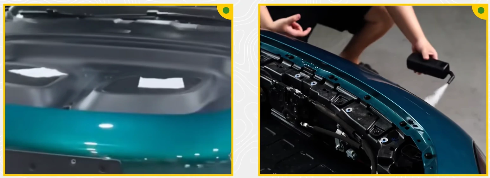
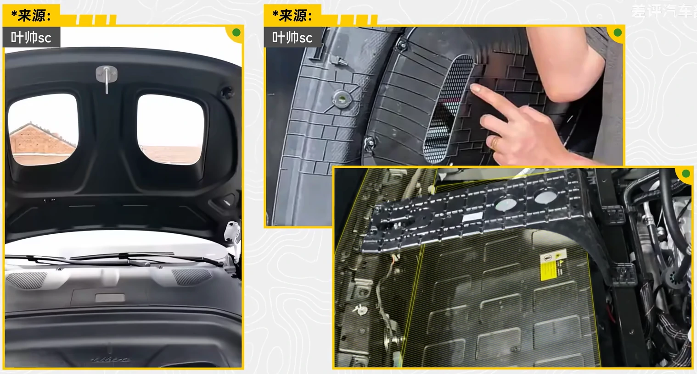
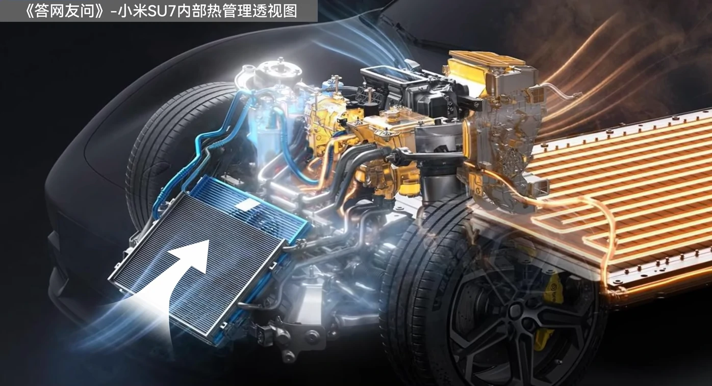
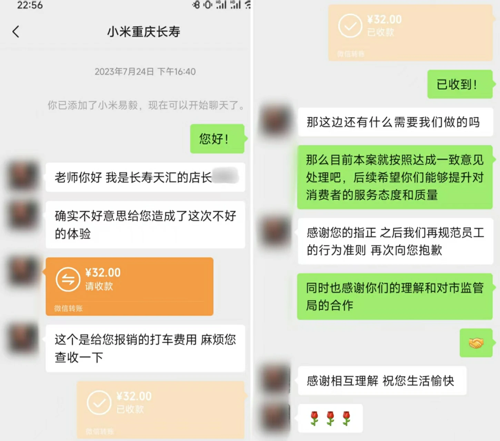
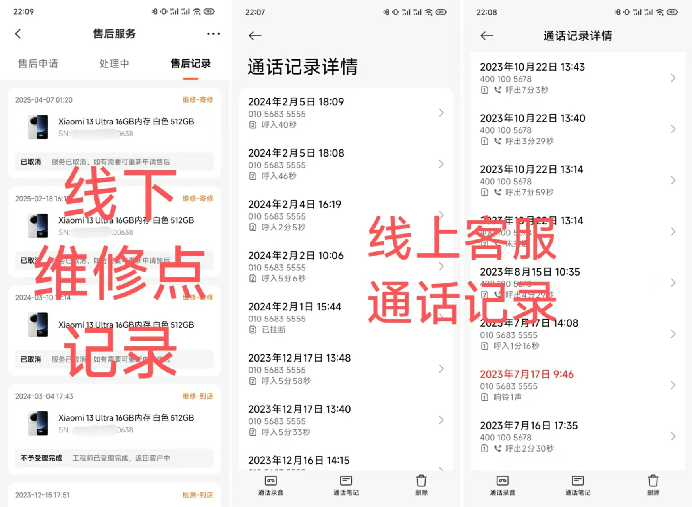
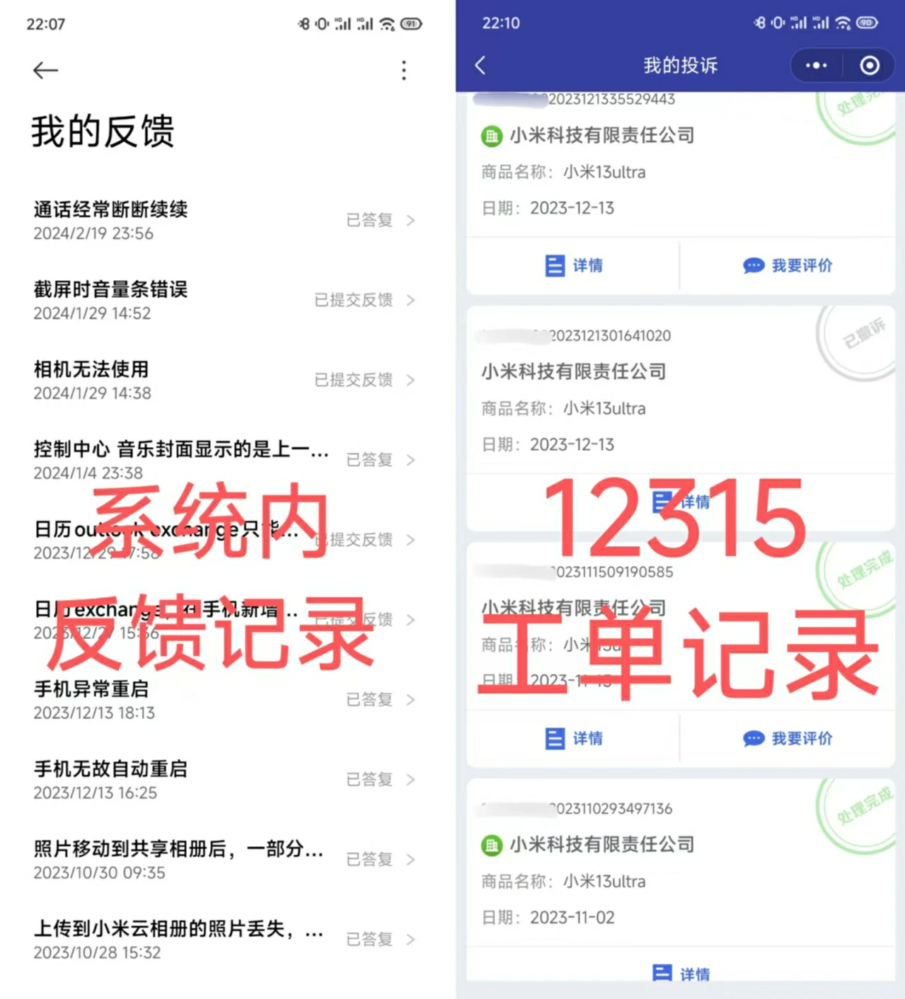
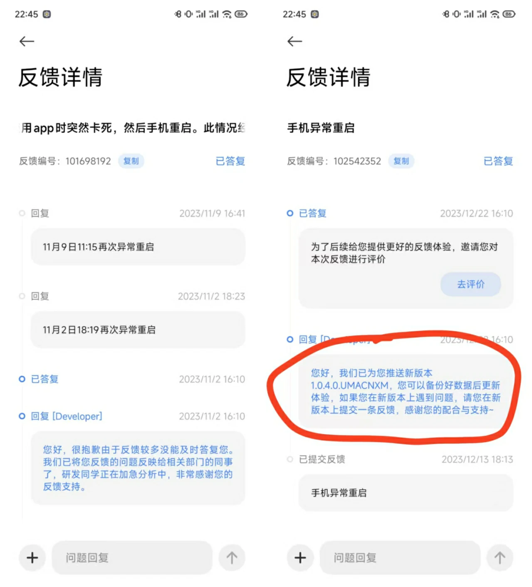

1 4.2万加个装饰？
近日，小米汽车又陷入舆论漩涡，众多车主要求退车。据第一财经报道，多名Su7 Ultra准车主认为，其4.2万选装的碳纤维双风道前舱盖存在虚假宣传或者官方表达有误。
小米官方最初宣称该部件“完全复刻原型车空气动力学设计，拥有2个贯穿风道，实现前部空气高效导流”，雷军更强调“内部结构改动，支持轮毂散热”。
然而用户实测发现：
鼓风机测试无气流：纸巾放置于风道开口处，未出现气流通过迹象；
 拆解显示结构未优化：内部仅塑料支架和普通前舱结构，未连接有效散热系统；
 散热效果微乎其微：日常驾驶中导流功能未达预期。

消费者认为小米通过“赛道级散热”“双风道设计”等术语夸大功能，引导用户为4.2万元选装费买单，实际却仅提供装饰性外观升级，涉嫌违反《消费者权益保护法》的知情权。
小米承认“信息表达不够清晰”，但未正面回应“风道无实际作用”的核心质疑，补偿方案更是引发广大消费者的不满。
笔者对电车并无专业了解，更买不起Su7 Ultra。但笔者想谈谈自己买高端小米的闹心经历，并用实际经验告诉你，为什么我强烈不推荐你买小米的任何高端产品。
2 售后态度恶劣，宣传只是噱头
2023年7月2日，笔者在长沙购买价值￥6499的小米13 Ultra。7月9日，笔者在重庆出差时，手机出现无限重启、无法启动的现象。
笔者致电小米客服，客服表示，如果需要保留数据，需前往线下售后中心（小米之家重庆长寿天汇广场店，重庆市长寿区向阳路16号）处理，退出recovery界面后即可正常使用。
因笔者距离天汇广场较远，且初次到重庆出差不足一周，人生地不熟，因此打车前往售后中心。但中心工程师非但未对故障手机作任何处理，且态度恶劣，扬言“你去找12315啊”。
另外，售后中心未按服务承诺给本人备用机，已违反购机宣传。当时，不仅仅是天汇广场店无备用机库存，而是整个重庆市（重庆还不是什么二三线小城市）长寿区的小米售后服务中心，竟无一家可提供备用机！
也就是从这时候开始，我意识到，小米的所有宣传，都只是噱头。
好！既然你小米扬言威胁“你去找12315”，那我也不是吃素的。我真找12315了。
最后，小米之家的店长加了我微信。因为我仍在购机15天内（符合换机期限要求），因此工作人员指引我在“小米商城”线上寄换，换一台新的机器。而对于工作人员态度恶劣的问题，店长也道了歉，并补偿了32元打车费用。

尽管过程不尽愉快，但毕竟最后换了一台新手机，店长也道了歉，事情就这么过去了。
没想到，作为小米用户，我的麻烦才刚刚开始。
3 手机大问题持续，小问题依旧
7月9日换新后，笔者在7月22日至12月日（共计约5个月的时间，当时还是MIUI 14）内被我的小米13 Ultra折磨得死去活来。
5个月的时间内，我的13u平均每隔两天就会卡死一次，偶热还会自动重启。且无固定的触发条件，随时随地、使用任何应用的过程中都有可能触发。（视频是某一次卡死的录像，类似故障频繁发生）
此外还有各种小问题，包括但不限于：自带相机APP经常无法使用、日历显示错误、无法截屏等。
5个月的时间内，我尝试了几乎所有反馈渠道。
从电话客服到线下维修点“小米之家”，

从自带的“服务与反馈”APP到12315平台，

所有渠道共计反馈过不下20次，但得到的只有2种答复：
①硬件没问题，我们管不了（难度软件问题不属于售后范围吗？）；②刷机（但我都刷过5次机了，哪次刷完能解决问题？！）。
最后这个问题的解决方式是：等到HyperOS 1.0更新，比较严重的问题就自动消失了。

但直到现在，13u的各种小问题仍然不断：截图后音量条反复弹跳、传送门触发几率低、系统桌面经常无响应，等等。
令人心寒的是，小米从未主动联系我沟通解决方案，更未提供任何形式的补偿。
作为售价 6499 元的旗舰机型，小米 13 Ultra 的表现彻底颠覆了我对高端产品的认知 —— 这不是 “高端”，而是 “高价低质”。
小米13u是我的第一台小米设备，也将是最后一台。
4 其它网友的问题
当然，我遇到的这些问题，姑且只能算小问题。互联网平台上，许多网友爆料出了更多更严重的问题：
2018年，小米8手机“透明探索版”被质疑后盖内部元器件为贴纸装饰，官方解释为“装饰主板”，采用真实主板工艺但非功能部件。
2021年，骁龙888发热，导致小米11手机存在烧主板的设计缺陷，引发WiFi模块故障，初期官方提供换机政策，后期改为维修，引发用户不满和舆论危机。
2024年3月，小米14 Ultra手机宣传的“龙晶陶瓷”后盖被检测为微晶玻璃，与传统陶瓷性能存在差异，引发消费者对营销措辞的质疑。
2024年11月，小米SU7汽车爆发“自动泊车撞墙”门，全国70多辆车因系统bug失控撞击，官方仅承诺维修拒赔贬值损失。
https://mp.weixin.qq.com/s/ztAOflfRVFNPUbnhrs0WkA
此外，还有高管套现疑云（2025年3月）、极端粉丝文化、饥饿营销套路等问题，笔者在此不一一列举。
5 小米冲高端？笑话！
2024年，我国居民人均可支配收入41314元，而仍有相当一部分群体的年均收入，低于这一水平。
对于这部分消费者，红米 K80无疑是性价比之选 —— 骁龙 8 Gen3 处理器、6550mAh 超大电池、90W 快充，超声波指纹，售价仅 2499 元起，真正做到了 “高配低价”。
然而，小米的高端化之路却尽显尴尬。
作为 “性价比之厂”，其研发投入严重不足。
小米的手机系统从MIUI 12到如今的HyperOS 2，广大消费者无数次反映过很多系统级Bug，至今未解决；
小米SU7汽车上市仅半年，就因空气动力学设计缺陷、系统 bug等问题引发多次大规模维权，暴露了其研发能力的短板。
而在售后服务方面，小米同样未能跟上高端化步伐。
2024 年消费保平台报告显示，小米手机投诉占比排名第1。
我的亲身经历与黑猫投诉平台上大量用户反馈的 “过度维修”“售后推诿” 等案例，无不印证小米高端产品售后体系的脆弱性。
小米的高端产品，本质上是用华丽的营销包装掩盖技术短板，用 “高端”的标签收割消费者的信任。
毕竟，一个连基础品控和售后服务都做不好的品牌，有什么资格谈 “高端”？


发表您的看法